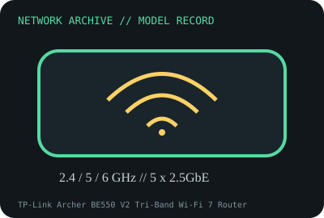

[ MODEL-SPECIFIC NETWORK HARDWARE RECORD ]
TP-Link Archer BE550 V2 Tri-Band Wi-Fi 7 Router (BE9300)
Tri-band Wi-Fi 7 router with five 2.5GbE Ethernet ports and USB 3.0. Specifications are tied to this named product; confirm the physical label, revision and source documentation.

IDENTIFICATION: Verify exact PID/model, revision, label and host support. The catalog separates nominal PHY/link specifications from measured throughput; no benchmark is asserted unless explicitly recorded.
Model-specific specifications and compatibility
| Subcategory | Network appliances: routers, access points & switches |
|---|---|
| Exact product/model | TP-Link Archer BE550 V2 Tri-Band Wi-Fi 7 Router (BE9300) |
| Bus, ports and physical interface | Five 2.5GbE RJ-45 ports: one WAN and four LAN; USB 3.0; six internal antennas, model version 2.0. |
| PHY, radio or optical interface | IEEE 802.11be tri-band radio: 2.4 GHz up to 688 Mb/s, 5 GHz up to 2880 Mb/s and 6 GHz up to 5760 Mb/s, per TP-Link V2.0 data sheet. 320MHz/4K-QAM/MLO depend on client and region. |
| Nominal rate (not measured) | BE9300 label sums maximum PHY rates across separate bands, not a single link or measured throughput. All five Ethernet ports are rated 2.5Gb/s; WAN/NAT, RF and workload may limit payload. |
| Measured throughput | No router/NAT/Wi-Fi bench result is claimed. Measure wired routing and each band separately, recording firmware, clients, channel, traffic, WAN/LAN topology and method. |
| Driver, OS and firmware | TP-Link stock router firmware managed via web UI/Tether app; use Archer BE550 V2.0 and purchase-region support/downloads only. Firmware for other versions is not interchangeable. |
| Platform/media compatibility | Requires the regional power supply/firmware and regulatory radio settings. 6GHz/320MHz/4K-QAM and Wi-Fi 7 MLO require supported clients and allowed regional channels. |
| Variant warning | This record is for Archer BE550 hardware V2.0 (BE9300 data sheet). Do not use firmware for V1 or V2.6 or assume regional radio/port packages identical; check bottom label and version-specific downloads. |
Revision, operation and measurement notes
This record is for Archer BE550 hardware V2.0 (BE9300 data sheet). Do not use firmware for V1 or V2.6 or assume regional radio/port packages identical; check bottom label and version-specific downloads.
TP-Link stock router firmware managed via web UI/Tether app; use Archer BE550 V2.0 and purchase-region support/downloads only. Firmware for other versions is not interchangeable.
No router/NAT/Wi-Fi bench result is claimed. Measure wired routing and each band separately, recording firmware, clients, channel, traffic, WAN/LAN topology and method.
Archival, ESD and preservation notes
Record hardware version, regional label, serial/MACs, firmware build, PSU label, antennas and reset state. Remove power before service; avoid unshielded board contact and keep the original supply paired by rating/polarity.
Retain source provenance and the revision/date of each supporting document. Store public records without credentials, personal information or other secrets.
Primary manufacturer and standards sources
- TP-Link Archer BE550 product pagePrimary manufacturer or standards reference; confirm exact part label, revision, and platform qualification.
- TP-Link Archer BE550 V2.0 manufacturer data sheetPrimary manufacturer or standards reference; confirm exact part label, revision, and platform qualification.
- IEEE 802.11 working group standardsPrimary manufacturer or standards reference; confirm exact part label, revision, and platform qualification.
Manufacturer source links are provided for the stated model or exact product family; use the board label and the official revision-specific compatibility list for final qualification.